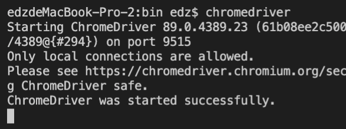

- 00 导读 入门Python的必备知识.md.html
- 00 开篇词 重复工作这么多，怎样才能提高工作效率？.md.html
- 01 拆分与合并：如何快速地批量处理内容相似的Excel？.md.html
- 02 善用Python扩展库：如何批量合并多个文档？.md.html
- 03 图片转文字：如何提高识别准确率？.md.html
- 04 函数与字典：如何实现多次替换.md.html
- 05 图像处理库：如何实现长图拼接？.md.html
- 06 jieba分词：如何基于感情色彩进行单词数量统计？.md.html
- 07 快速读写文件：如何实现跨文件的字数统计？.md.html
- 08 正则表达式：如何提高搜索内容的精确度？.md.html
- 09 扩展搜索：如何快速找到想要的文件？.md.html
- 10 按指定顺序给词语排序，提高查找效率.md.html
- 11 通过程序并行计算，避免CPU资源浪费.md.html
- 12 文本处理函数：三招解决数据对齐问题.md.html
- 13 Excel插件：如何扩展Excel的基本功能？.md.html
- 14 VBA脚本编程：如何扩展Excel，实现文件的批量打印？.md.html
- 15 PowerShell脚本：如何实现文件批量处理的自动化？.md.html
- 16 循环与文件目录管理：如何实现文件的批量重命名？.md.html
- 17 不同操作系统下，如何通过网络同步文件？.md.html
- 18 http库：如何批量下载在线内容，解放鼠标（上）？.md.html
- 19 http库：如何批量下载在线内容，解放鼠标（下）？.md.html
- 20 不同文件混在一起，怎么快速分类？.md.html
- 21 SQLite文本数据库：如何进行数据管理（上）？.md.html
- 22 SQLite文本数据库：如何进行数据管理（下）？.md.html
- 23 怎么用数据透视表更直观地展示汇报成果？.md.html
- 24 条形、饼状、柱状图最适合用在什么场景下？.md.html
- 25 图表库：想要生成动态图表，用Echarts就够了.md.html
- 26 快速提取图片中的色块，模仿一张大师的照片.md.html
- 27 zipfile压缩库：如何给数据压缩&加密备份？.md.html
- 28 Celery库：让计算机定时执行任务，解放人力.md.html
- 29 网络和邮件库：定时收发邮件，减少手动操作.md.html
- 30 怎么快速把任意文件格式转成PDF，并批量加水印？.md.html
- 春节特别放送1 实体水果店转线上销售的数据统计问题.md.html
- 春节特别放送2 用自顶至底的思路解决数据统计问题.md.html
- 春节特别放送3 揭晓项目作业的答案.md.html
- 结束语 和我一起成为10X效率职场人.md.html
- 捐赠
19 http库：如何批量下载在线内容，解放鼠标（下）？
你好，我是尹会生。
在上节课，我们学习了怎么使用“requests-html”库来批量下载图片，这足以帮你应对大部分需要批量下载互联网资源的场景了。
但是除了批量下载这一典型场景外，还有两种场景“requests-html”工具无法覆盖，其中就包括一些网站的每日签到功能，明明登录网站后点击一个按钮就能领到虚拟货币，但是每次还要手动输入账户和密码，再用鼠标点击领取按钮。相信已经学会了如何用Python访问网页的你，早就想把签到进行自动化了吧。
那么今天，我就以京东自动签到领金豆为例，为你介绍一款比“requests-html”更加强大的浏览器工具“selenium”，通过selenium我将带你实现自动化的用户登录和模拟鼠标点击功能。
selenium的适用场景
我刚才也提到了，在你把“requests-html”库应用到各种批量下载场景之后，你会发现有两种场景下使用“requests-html”无法实现批量下载。
一种场景是，有的网页为了防止你用工具下载，会对下载工具进行检测。如果你的HTTP客户端不是浏览器，那就不允许你访问该网站下的所有内容。
另一种场景是，一些网页为了更好的交互性，就使用了JavaScript脚本语言。而JavaScript脚本语言需要在浏览器运行，才能获得服务器的数据。所以如果使用“requests-html”来获取这些数据的话，你就必须再编写Javascript脚本。
基于这两种原因，我们可以使用“selenium”来解决。这也正是为什么有了“requests-html”库之后，我还要再带你学习“selenium”库。
它的实现原理，即：通过“WebDriver”组件，把Python与浏览器连接起来，让Python来控制浏览器的行为，向浏览器发送各种模拟用户操作的指令，此时，真实的浏览器会按照Python发的各种指令对服务器进行访问。
这样既可以解决网页加密的问题，又避免了再编写Javascript脚本，弥补了“requests-html”在批量下载场景中的缺憾。无论从操作的友好程度，还是实现功能的简单程度上，都要比“requests-html”强大。
那今天这节课，我们就来学习如何使用“selenium”来实现自动签到。不过考虑到你是第一次接触“selenium”，所以在学习实现方法之前，我还是先来带你学习怎么安装和执行它。
“selenium” 的安装与初次运行
“selenium”是基于“Webdriver”连接Python和浏览器的，而“Webdriver”的组件比较多，所以它的安装过程也要比一般的Python第三方库复杂一点。
考虑到你是第一次使用它，我就把具体的安装步骤以及注意事项，拆分成了5个步骤，保证你能顺利安装，并且能用它访问网页。
第一步：根据浏览器版本来下载“Webdriver”。
由于“selenium”会通过“Webdriver”调用你当前电脑上的浏览器访问HTTP服务器，所以必须找到和浏览器版本一致的“Webdirver”程序，然后下载下来。
我这里以工作中最常用的Chrome浏览器为例，首先要通过Chrome的“设置”—“关于”菜单查看浏览器的版本。我的Chrome浏览器版本如下图：
接着，根据我的浏览器版本“89.0”访问“Webdrive”国内的镜像站，下载与浏览器相匹配版本的“Webdriver”。这里要注意，不同的操作系统，“Webdriver”的安装包不同，所以需要你选择对应的操作系统版本。“Webdriver”的下载网页内容截图如下：
我这里以“mac”操作系统为例，下载了“chromedriver_mac64.zip”压缩包后，解压缩之后，会得到“chromedriver”文件。这个文件就是连接Python和浏览器的工具。
第二步，把“Webdriver”放在命令的搜索路径下。
“chromedriver”文件是一个可执行文件，我们需要把它放入命令的搜索路径中，这样文件才能在Python调用浏览器时被直接运行，我们就不用输入它的完整路径。
我在这里解释一下命令的搜索路径。它是每个操作系统都事先定义好的，就像它的名字一样，你在命令行运行的任意一条命令，都可以从命令搜索路径中依次查找到。
那么在mac操作系统下，我们可以使用命令行运行“echo $PATH”，来查看当前系统的命令搜索路径都有哪些。
在这个命令行中，变量“PATH”就是专门用于指定命令搜索路径的环境变量。我电脑上的命令搜索路径和搜索顺序如下。
SHELL$ echo $PATH
/Library/Frameworks/Python.framework/Versions/3.7/bin
:/usr/local/bin:/usr/bin
:/bin
:/usr/sbin
:/sbin
基于操作系统会按照上面的目录对命令进行搜索，我可以把“chromedriver”放在上面的任意一个目录当中。不过我更推荐你把它放在Python相同的目录中，便于你后续版本更新时，对它进行文件替换。
我的Python安装目录是“/Library/Frameworks/Python.framework/Versions/3.7/bin”，因此我就把“chromedriver” 放在这个目录中。放入之后，我就可以在命令行运行“chromedirver”。如果能够正确运行，则会提示运行成功。否则会提示找不到这条命令，你需要再检查一下它被存放的目录。正确运行的截图如下，供你参考。

在完成了最复杂的“Webdriver”安装之后，接下来就可以安装Python的库，并尝试使用Python库调用浏览器了。
第三步，安装“selenium”库。
安装“selenium”库可以继续使用pip命令。它的库和安装包同名，你可以在命令行运行以下命令，进行正确安装。
pip3 install selenium
第四步，使用“selenium”访问网页。
安装成功之后，我们可以通过任意一个网页的访问，来测试从Python到“Webdriver”再到浏览器，整个工具链是否能正确运行。我把代码贴在下方供你参考。
from selenium import webdriver
import time
browser = webdriver.Chrome()
browser.get("http://www.jd.com")
time.sleep(10)
browser.quit()
这段代码实现了调用浏览器访问京东的网页，并在10秒后自动关闭浏览器的功能。如果能够正确运行，那么说明整个工作链是配置正确的。
这段用来访问京东来验证工作链的代码，由导入库、浏览器的初始化、控制浏览器行为三个部分组成。我来解释一下。
首先是导入库。我在代码的前2行，除了导入“selenium”库用来调用“Webdriver”外，还导入了“time”库。
导“time”库的原因就在于，我们需要使用“selenium”库模拟手工操作浏览器的流程，而手工操作会有一定的延迟。所以我就基于“time”库的“sleep()”函数，来模仿用户查看网页的行为，在打开网页等待了10秒后，再关闭网页。
其次是浏览器的初始化。浏览器的初始化在Python内部做了两件事情，第一个是找到之前安装的“chromedriver”文件，检查它是否可执行。第二件事情是根据调用的“Chrome()”函数，找到当前电脑中的浏览器并运行它。
最后控制浏览器的行为。我使用了“get()和quit()”两个函数，它们分别实现的是向服务器发起HTTP的“GET”请求，以及关闭浏览器的功能。
请求如果成功发送， 你会在“Webdriver”打开的浏览器看到网页内容，我把正确执行的结果截图放在下面供你参考。

第五步，取得网页的源代码并打印。
通过“selenium”打开浏览器之后，除了控制浏览器的行为，你还需要像上一讲的批量下载图片一样，批量获取网页的资源。这时你可以使用如下代码来获取当前浏览网页的源代码。这样在关闭浏览器之后，你仍然可以对网页的内容进行操作。代码如下：
content = browser.page_source
print(content)
掌握了“selenium”和“Webdriver”的安装和运行，接下来我们就可以利用“selenium”来实现京东的自动签到功能了。通过这一场景，来为你演示如何通过“selenium”模拟浏览器并实现自动签到。
如何实现京东自动签到
要想实现自动签到，你既要实现用户登录，又要模拟用户点击按钮。随着技术的日新月异，很多登录和按钮都不再使用简单的“POST”请求了。这时你就需要用“selenium”基于标签名字找到按钮的链接，像普通用户请求网站链接一样，不必理解登录和签到的内部的原理，就能实现自动化访问。
自动签到的原理与思路
“selenium”之所以能替代手动操作，达到自动化的效果，核心原因在于，我们可以通过“selenium”来模拟浏览器的操作。而我们可以通过对浏览器的功能拆解，把浏览器的交互行为，一一对应到“selenium”的非交互命令，之后就能实现自动化操作了。
这也正是自动签到的原理。再进一步说，“selenium”的行为越像浏览器，自动签到的功能就模拟得越完整。换言之，签到功能也就更自动化。那我们就来看看浏览器是如何实现登录和签到工作的。
使用浏览器进行登录有三个步骤，分别为：
- 打开登录页面；
- 切换到用户密码登录选项卡；
- 点击登录按钮。
我们依次来分析一下这三个步骤如果用“selenium”，各自是怎么实现的。
首先，打开登录页面，在浏览器中是鼠标点击“登录”按钮实现的，它的实现是向指定的URL发送“GET”请求，发送后服务端返回网页，就是你见到的登录页面了。
其次，打开登录页面后，默认的登录方式是二维码登录。
为了能让“selenium”能够模拟，我们需要通过用户名和密码方式登录。那接下来就切换到用户密码登录这一选项卡，这一切换动作在浏览器中可以通过使用鼠标实现。不过在“selenium”中，我们需要通过“GET”请求来替代它，才能实现非交互式的登录。
登录切换页面的网页源代码以及网页，我把相关截图一并放在下方，供你参考。
最后，你需要在浏览器输入用户名密码，而后点击“登录”按钮，实现登录。
由于京东的登录界面是经过加密的，所以不能使用“requests-html”直接发送“POST”请求来实现登录，这里仍然要继续使用“selenium”获取用户名、密码的输入框，输入之后，模拟点击按钮的“GET”请求到服务器之后，才能实现登录。
使用“selenium”模拟浏览器，实现自动登录
在了解了浏览器的原理之后，你就可以使用“selenium”模拟浏览器实现登录了。我把“selenium”登录京东的代码写在下方供你参考。
from selenium import webdriver
import time
browser = webdriver.Chrome()
# 访问主页
browser.get("http://www.jd.com")
time.sleep(2)
# 访问登录页
browser.get("https://passport.jd.com/new/login.aspx?ReturnUrl=https%3A%2F%2Fwww.jd.com%2F")
time.sleep(2)
# 切换为用户密码登录
r = browser.find_element_by_xpath(
'//div[@class="login-tab login-tab-r"]')
browser.execute_script('arguments[0].click()', r)
time.sleep(2)
# 发送要输入的用户名和密码
browser.find_element_by_xpath(
"//input[@id='loginname']").send_keys("username")
time.sleep(1)
for i in "password":
browser.find_element_by_xpath(
"//input[@id='nloginpwd']").send_keys(i)
time.sleep(1)
# 点击登录按钮
browser.find_element_by_xpath(
'//div[@class="login-btn"]/a').click()
time.sleep(10)
# 退出浏览器
browser.quit()
我在代码中，为了模拟浏览器的登录行为，一共使用了5个函数，每个函数都对应着“selenium”的一种操作。按照代码的运行顺序，我分别使用了请求网页、使用XPath查找标签、执行脚本、模拟键盘输入以及模拟鼠标点击五个动作，来实现登录的模拟操作。接下来我们先从请求网页开始，来为你逐个分析这五个函数。
第一个函数get() ，使用“GET”方式请求网页。当你需要点击超链接来到达新的页面时，都可以使用“get()”函数来实现。所以在代码中，请求主页和请求登录页面都是用了这个函数。
第二个函数find_element_by_xpath() 。在网页中，你需要对某一标签进行操作时，可以使用“XPath”先找到该标签。类似地，在浏览器中，“find_element_by_xpath() ”就是找到你想操作的标签。
比如我在代码中找到用户名和密码的选项卡、用户名密码的输入框、登录按钮等元素，都是用过它进行定位的。定位的方法和上节课讲的方式相同，通过浏览器的调试页面找到网页元素对应的代码，再把代码利用“XPath”提取出来即可。
第三个函数execute_script() ，是用来执行网页中自带的JavaScript脚本的。当你切换用户密码选项卡时，会发现网站的代码是用JavaScript来实现的，而你又不想再去手动编写脚本（执行“class”属性为“login-tab login-tab-r”的“div”标签下面的JavaScript脚本），那就可以使用这个函数，对第一个参数的JavaScript进行点击。
第四个函数send_keys()，用于在输入框填写内容。我在脚本中把“username”和“password”作为用户名和密码自动填入输入框中，你可以把它们替换为真正的用户名和密码。
这里需要注意的是，我对密码的填入增加了间隔时间，否则登录时会弹出图形验证码，阻止你进行自动登录。
第五个函数click() ，用于模拟鼠标点击超链接的动作，它和取得超链接中的href属性，并用“GET”方式访问是相同的功能，但是“click()”函数会比“get()”函数更直接，减少了从“a”标签再提取“href”属性的麻烦。
以上就是使用“selenium”模拟浏览器实现登录的主要思路。登录之后，我们想要实现签到的障碍就全都解决了。那么接下来我来带你继续实现自动签到功能。
利用“selenium”，实现自动签到
要想实现自动签到，还需要访问签到页面和点击签到按钮。这两个功能相信你在我为你分析了登录的代码之后，一定会想到访问页面可以使用“get()”函数，签到按钮可以使用“click()”函数。
我把自动签到的代码放在下面，一并提供给你。通过和登录代码的整合，你就可以利用“selenium”实现自动签到的功能了。
# 访问签到页面
browser.get("https://mall.jd.com/index-1000002826.html")
time.sleep(2)
# 签到并领金豆
browser.find_element_by_xpath('//div[@class="jSign"]/a').click()
time.sleep(10)
这段代码就是访问签到页面并领取金豆的代码。需要你注意的是，访问页面和签到两个操作之间需要等待几秒，否则会因为网页加载过慢，导致签到按钮还没加载完就发送了点击动作，让自动签到失败。
总结
最后，我来为你总结一下本节课的主要内容。在这一讲中，我通过“selenium”实现了浏览器的模拟，并把浏览器的点击链接、用户登录、切换标签等常用功能使用“selenium”的函数和XPath转换为用Python可以控制的操作。转换之后，你就可以利用Python控制浏览器的行为，把这些需要鼠标的交互式操作编写为非交互式的代码，达到自动化控制浏览器的目的了。
除了实现自动签到以外，通过“selenium”的函数组合，你就能模拟浏览器的绝大部分操作。我也希望你能够在学完这节课后，想一想你的工作当中是否也使用了浏览器进行重复的工作，希望你能通过对本讲的学习，把它们改为自动化。
思考题
按照惯例，最后我来为你留一道思考题，你能否利用今天讲的模拟浏览器的方法，自动登录Github，并以“Python”作为关键字进行搜索，然后把搜索的结果保存到一个文件呢？
欢迎把你的想法和思考分享在留言区，我们一起交流讨论。也欢迎你把课程分享给你的同事、朋友，我们一起做职场中的效率人。我们下节课再见！
© 2019 - 2023 Liangliang Lee. Powered by gin and hexo-theme-book.